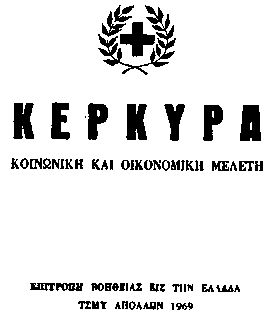
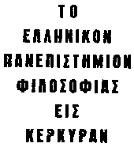

APPENDIX. HUBBARD'S MANIFESTO FOR CORFU




El Ron's manifesto was divided into two parts and published in Greek. The first part (above left) was entitled:
"CORFU SOCIAL AND ECONOMIC SURVEY"
"HELP GREECE COMMITTEE"
"T.S.M.Y. APOLLO 1969"
and the second part (above right):
"THE GREEK UNIVERSITY OF PHILOSOPHY IN CORFU"
These documents were typed and run off on a Roneo style stencil machine and bound with a stiff paper back cover. The former was marked, "Copyright C1969 by L. Ron Hubbard" and embossed with an emblem incorporating the Greek Orthodox Cross inside the Scientologist laurel leaf crest. The second part, relating to the University, for some inexplicable reason, bore no Copyright mark by El Ron and no mention of the "Help Greece Committee" or its adopted emblem. There was just a bare cover bearing the title and the Corfu crest. Perhaps the Commodore realised that he might be sailing rather close to the wind and, if the authorities should complain that his proposals to transform the Royal Palace into a University for Scientology were outrageous, he could always plead that this part of the Manifesto was not his! Or, perhaps, it was intended to suggest that this proposal came from the Corfiots themselves!
Part One of the Manifesto provided, inter alia, for:
The following are some translated extracts of Part Two, "The University":
"THE UNIVERSITY" "Once upon a time Corfu had her own university. This was taken from her at a time of great centralisation and since this university functions today elsewhere, there are no hopes it will return here.
"But there is no need to request for its return.
"The only thing that is needed is to establish a new university in Corfu.
"Most professors of psychology and the schools of psychology foresee as part of their lessons subjects of dianetics and scientology.
"It should be noted that professors and students would be exempt from the restrictions which are in force in the case of ordinary tourists.
"The university would be registered as a Greek company. Recognition by Ministry of Education would be obtained. We shall arrange for its exemption from taxes according to the new laws, since it will aid tourism.
"Our company, Operation and Transport Services, shall be associated with the university in order to pay to it a percentage from all income of O.T.S. One of the directors of O.T.S. will grant a loan to the university for its establishment.
"Thus the university will achieve financial independence. Our O.T.S. company will advertise for students who will be handled by O.T.S. Thus the university will start filling its coffers immediately.
"Supplementary Arrangements. We shall make efforts to have the local Royal Palace given as a gift for this worthy target."


Last updated 12 January 1997
by Chris Owen (co@nvg.unit.no)